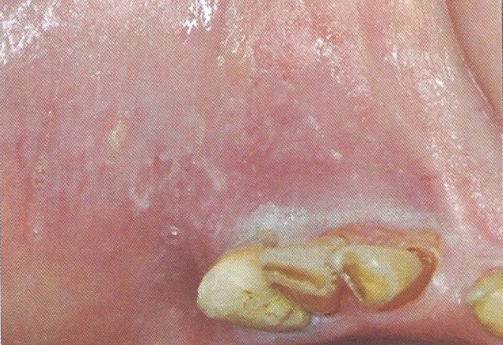

Burn
สาเหตุ ความร้อน สารเคมี หรือยาที่มีฤทธิ์กัดกร่อน ไฟฟ้า
พบรอยย่นสีขาว ถ้าเป็นรุนแรงจะเกิดเป็น slough ปกคลุม
ซึ่งสามารถหลุดลอกหรือเช็ดหลุดออกได้ เกิดเป็นแผลที่มีเลือดออก
และมีpseudomembraneสีขาวปนเหลืองปกคลุมในเวลาต่อมา
พบ บริเวณ palate หรือ buccal mucosa